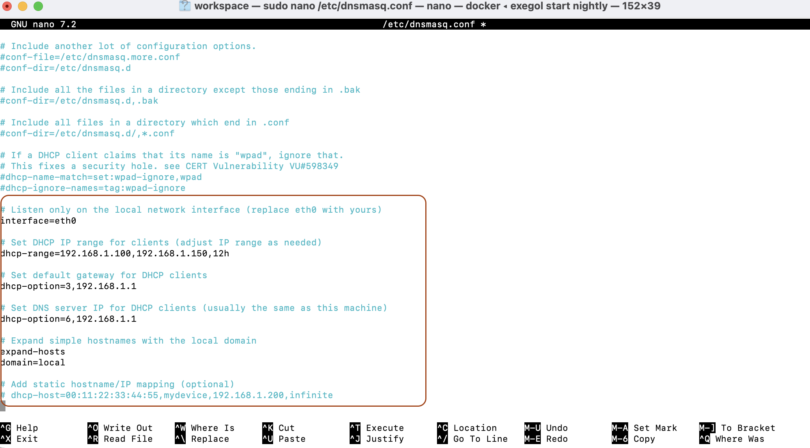
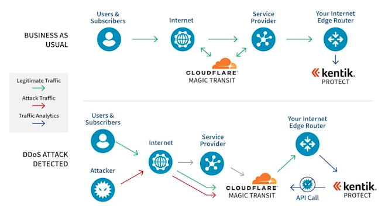
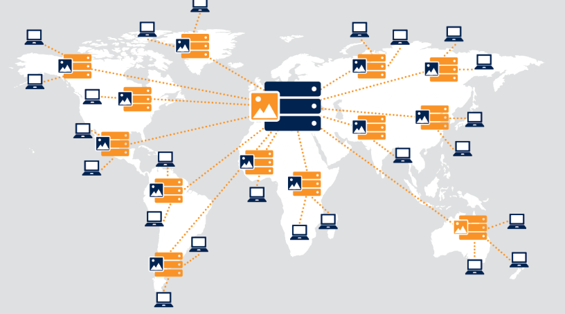

Ne considérez plus le DNS comme un simple annuaire téléphonique du réseau !
08 Septembre 2025, 14:30 CEST
CyberIl est désormais l'arsenal et le champ de bataille des hackers. Votre configuration DNS est-elle sécurisée ?
Qu'est-ce que le DNS ? Le système de noms de domaine (Domain Name System) est un système qui traduit le nom d'un site web en une adresse IP. Il comprend une architecture à quatre couches : Résolveur, Racine, TLD (Domaine de premier niveau) et Autoritaire. Nous l'utilisons tous les jours, mais c'est en fait un protocole établi il y a des décennies qui n'a pas pris en compte l'évolution des menaces de cybersécurité, c'est pourquoi j'aime avoir cet article de blog.
Le service DNS est très populaire et nous pouvons le toucher occasionnellement lorsque nous devons ajouter de la production pour des applications, des micro-services, du SaaS ou même simplement tester la QA, l'UAT pour les tests. Nous avons utilisé le DNS soit avec un serveur fournisseur, soit avec un cloud comme Cloudflare, AWS Route 53, Azure DNS, GCP Cloud DNS et de nombreux fournisseurs DNS en ligne différents.
J'ai donc essayé de rassembler les nouvelles d'attaques liées au DNS de l'année dernière, et de lister les techniques d'attaque de base, comment les éviter en tant que responsable informatique ou en charge de la cybersécurité. Encore une fois, je ne suis pas un expert mais j'aime écrire au fur et à mesure que j'apprends, donc si vous trouvez des points qui ne sont pas absolument corrects, n'hésitez pas à m'écrire .
Cas n°1 : Commandes C2 cachées dans les enregistrements DNS TXT
Comme les équipes rouges utilisent le contrôle à distance comme Covenant C2 (*1) pour tester légalement les défenses, Covenant prend en charge les communications chiffrées et furtives, ce qui rend son trafic difficile à détecter. Les attaquants peuvent automatiser des tâches, surveiller les systèmes compromis en temps réel et personnaliser les attaques sur les cibles. Voici un cas qui s'est produit :
Date : 16/07/2025
Incident : Des hackers ont caché les commandes du contrôleur Covenant C2 dans les enregistrements TXT du DNS. Tout ordinateur interrogeant ce domaine recevrait un code malveillant chiffré et serait contrôlé à distance.
Sources : DomainTools, Tom’s Hardware (*2)
Recommandation : Les entreprises devraient surveiller le contenu et la fréquence des requêtes DNS, et mettre en place des tunnels de sécurité DNS.
Si vous êtes en charge de la cybersécurité informatique et que vous voulez éviter les attaques où Covenant C2 ou d'autres malwares cachent des commandes dans les enregistrements DNS TXT (comme les serveurs DNS publics 168.95.1 ou 8.8.8.8)
sudo nano /etc/dnsmasq.confEnsuite, ajoutez ou décommentez ces lignes pour configurer dnsmasq :

Parce qu'il utilise très peu de ressources, dnsmasq est couramment utilisé sur les routeurs, les petits serveurs, ou comme solution DNS/DHCP locale pour les réseaux internes. Il peut également être configuré pour bloquer les sites malveillants en redirigeant leurs requêtes DNS.
En résumé, dnsmasq facilite la gestion du DNS et du DHCP au sein des petits réseaux ou des réseaux domestiques, améliorant les performances et le contrôle.

Cas n°2 : Cloudflare a atténué une attaque DDoS de 7,3 Tbps
Date : 20/06/2025
Incident : Le trafic d'attaque a culminé à 7,3 Tbps, la majeure partie étant causée par des attaques par amplification DNS, avec un trafic provenant de plus de 120 000 adresses IP.
Source : The Hacker News (*3)
Recommandation : Utiliser le DNS Anycast ; la protection DDoS et l'analyse du trafic sont des défenses essentielles.
Exemple (sur Linux utilisant FRRouting avec BGP) :
# Attribuer une IP Anycast sur la boucle locale
sudo ip addr add 192.0.2.1/32 dev lo
# Configurer le démon BGP (FRR ou Quagga) pour annoncer le préfixe IP 192.0.2.1/32 aux pairs.
# Répéter sur d'autres serveurs à différents emplacements.
# Assurez-vous que les serveurs DNS écoutent sur l'IP Anycast.
Avantages :
- Latence réduite en utilisant le serveur le plus proche
- Haute disponibilité et tolérance aux pannes
- Absorption DDoS distribuée (le trafic d'attaque se répartit sur de nombreux nœuds)
Le DNS Anycast (*4) est largement utilisé par les serveurs racine DNS mondiaux, Cloudflare, Google DNS et de nombreux fournisseurs CDN pour une plus grande fiabilité et performance.

Conclusion
Qu'ai-je appris aujourd'hui ? DNS : Ce n'est pas seulement l'annuaire du réseau ; c'est une vulnérabilité que les hackers peuvent exploiter. Des exemples concrets incluent une attaque de 7,3 Tbps, des commandes C2 cachées et le détournement de sous-domaines de sites web gouvernementaux.
Tendance/Phénomène : Le DNS est passé d'un simple rôle de service à un champ de bataille principal pour les attaques et l'infiltration. Les protocoles de chiffrement tels que DoH (DNS over HTTPS) et DoT (DNS over TLS) rendent la surveillance extrêmement difficile. L'utilisation intensive des enregistrements CNAME dans les architectures cloud et avec les services tiers augmente le risque de « dangling records ».
Une stratégie de défense en trois étapes pour le DNS comprend :
- Spécifier un fournisseur DNS.
- Déployer des outils de surveillance et d'observation.
- Utiliser la détection des points d'exexfiltration (EDR) pour identifier les menaces.
Le contenu est un peu technique, mais c'est absolument un guide de défense incontournable pour le personnel informatique/de cybersécurité.
#SécuritéInformatique #SécuritéDNS #Cyberattaque #DétournementDeDomaine #Cybersécurité #C2 #DOH #DéfenseCybersécurité #SecBriefCybersecurityBriefingRoom